Esencja marki
Kim jesteśmy, dla kogo robimy i jak brzmimy. Ten rozdział czytają wszyscy, także osoby, które piszą teksty do grafik.
Misja
Zamieniamy duże strategie w konkretną trasę. Uczymy strategii i liczb w krótkich, praktycznych porcjach i dajemy gotowe narzędzia, żeby mała firma i młody zespół wiedzieli, co zmienić w przyszły poniedziałek.
Hasło marki
strategia, produkty cyfrowe i dobry humor
Zawsze małymi literami, bez kropki. Pisane fontem Caveat albo DM Sans.
Dla kogo
Właściciele małych firm
Firmy od 1 do około 20 osób: usługi, handel, e-commerce, gabinety, pracownie. Mają mnóstwo pomysłów i mało czasu. Chcą wiedzieć, co konkretnie zmienić, żeby firma zarabiała więcej, bez czytania grubych książek.
Młodzi managerowie
Pierwszy zespół, zwykle 25–35 lat. Awansowali, bo byli dobrzy w swojej pracy, a teraz muszą planować, priorytetyzować i rozmawiać o liczbach. Szukają prostych frameworków (BCG, 80/20, piramida Minto) w 5 minut dziennie.
Osobowość
| Jesteśmy | Ale nie | Jak to widać |
|---|---|---|
| Konkretni | suchi i techniczni | Liczby, kroki, przykłady z małych firm. Jedna myśl na grafikę. |
| Ciepli | infantylni | Pastele, krem, łagodne kształty, zwracanie się na „Ty”. |
| Z humorem | prześmiewczy | Lilek, odręczne wstawki, lekkie żarty z Liliputów i Guliwera. Nigdy kosztem odbiorcy. |
| Kompetentni | korporacyjni i wyniośli | Ponad 10 lat wprowadzania produktów na rynek, ale mówimy prostym językiem. |
Ton komunikacji
- Na „Ty”, w obu formach, gdy to naturalne: „gotowa lub gotowy”. Zwroty „Ty”, „Twoja firma” piszemy wielką literą.
- Krótko: zdania do 20 słów, jedna myśl w akapicie, czasowniki zamiast rzeczowników („policz marżę”, nie „dokonaj kalkulacji marży”).
- Konkretnie: liczba, przykład lub krok w każdym komunikacie.
- Ciepło i z humorem: jedno lekkie zdanie na komunikat wystarczy. Przykłady z aplikacji: „Każdy Guliwer kiedyś się mylił.”, „Prezes byłby dumny!”.
- Bez żargonu: jeśli używamy terminu (marża, KPI, BCG), od razu tłumaczymy go po ludzku.
Słownik
Używamy
plan, kierunek, trasa, liczby, marża, zysk, decyzja, priorytet, krok, narzędzie, szablon, 5 minut dziennie, za darmo, bez zobowiązań, Akademia Guliwera, Kierunek Zysk, Lilek
Unikamy
synergia, ekosystem, leverage, quick win, disruption, ASAP, „game changer”, „guru”, „sekretna metoda”, „pasywny dochód”, „gwarancja wyników”
Czego unikamy zawsze
- Obietnic dochodu i wyników: żadnych kwot, „podwoisz przychody”, „zarobisz”, zrzutów ekranu z przelewami. Obiecujemy jasny plan i narzędzia, nie pieniądze.
- Sztucznej presji: „ostatnie miejsca”, liczniki i „tylko dziś” tylko wtedy, gdy są prawdziwe.
- Straszenia i zawstydzania („Twoja firma upadnie, jeśli…”).
- Stylu „guru”: drogie samochody, plaże z laptopem, stosy gotówki.
- Nazw firm, z którymi Angelika pracowała, i danych klientów. Doświadczenie opisujemy ogólnie: „ponad 10 lat wprowadzania nowych produktów na rynek w korporacjach i firmach technologicznych”.
- Krzyku w tekście: CAPS LOCK w zdaniach, kilka wykrzykników, ściany emoji. Wielkie litery tylko w krótkich etykietach (np. „KROK 1 · ZA DARMO”).
Nazwy, które piszemy zawsze tak samo
| Poprawnie | Niepoprawnie |
|---|---|
| Guliwera 4 | Guliwera4, GULIWERA 4, Guliwer 4, G-4 |
| guliwera4.pl (adres, małymi literami) | www.Guliwera4.pl, https://guliwera4.pl/ w grafice |
| Angelika Pruchniak-Gąszczyk | A. Pruchniak, Angelika P.-G. |
| Akademia Guliwera · Kierunek Zysk · Lilek | akademia guliwera, KIERUNEK ZYSK w zdaniu, Lilek-maskotka |
Logo
Znak G4 to łuk (jak brama i łuk portretu na stronie), litery G4 w kroju Fraunces i żółty uśmiech. Używaj wyłącznie gotowych plików z folderu brand/logo/. Teksty w plikach SVG są zamienione na krzywe, więc nie potrzebujesz fontów.
Wersje

znak-g4.svglogo-poziome.svglogo-poziome-krotkie.svglogo-osobiste.svg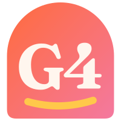
logo/favicon/ (ICO, PNG, SVG, apple-touch-icon).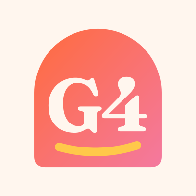
awatar-granat tylko gdy tło profilu jest jasne.Na jasnym i ciemnym tle
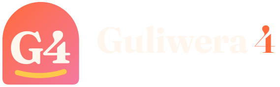
…-ciemne-tlo (kremowe litery).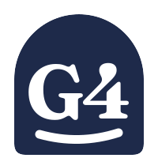

Wersje jednokolorowe (znak-g4-atrament, -granat, -bialy, -koral) służą do druku jednym kolorem, grawerów, tłoczeń i teł, na których gradient ginie. Litery i uśmiech są w nich wycięte (przezroczyste).
Pole ochronne i minimalne rozmiary
xxx = ¼ wysokości znaku G4. Wokół znaku i każdej wersji logo zostaw co najmniej x wolnego miejsca: bez tekstu, krawędzi kadru i innych logotypów. W logo poziomym x liczysz od wysokości łuku.
| Wersja | Ekran | Druk |
|---|---|---|
| Znak G4 | 24 px wysokości | 8 mm |
| Ikona (favicon) | 16 px | nie używać |
| Logo poziome z podpisem | 360 px szerokości | 70 mm |
| Logo poziome krótkie | 32 px wysokości | 10 mm wysokości |
| Logo osobiste | 340 px szerokości | 65 mm |
Zakazy
Nie rozciągaj i nie ściskaj. Skaluj zawsze proporcjonalnie (Shift).
Nie zmieniaj kolorów ani gradientu.
Bez cieni, obrysów, poświat i efektów 3D.
Nie obracaj i nie pochylaj.
Nie kładź wersji z gradientem na koralu ani różu.
Nie przepisuj logotypu innym fontem.
Bez przezroczystości i logo jako tła/wzoru.
Nie łącz z Lilkiem, ikonami ani innymi znakami.
Kolory
Paleta v3 „liliputy”: ciepły krem, energetyczny koral, pastele i dwa ciemne kolory do tekstu i mocnych sekcji. Kliknij kod HEX, żeby go skopiować. Pliki: brand/kolory/ (CSS, JSON, paleta ASE do Adobe, GPL do GIMP/Inkscape).
CMYK to przybliżenie z konwersji matematycznej. Przed drukiem poproś drukarnię o dopasowanie do jej profilu (najczęściej FOGRA39 lub FOGRA51) i o proof koloru. Pastele i koral w druku wychodzą zwykle bledsze: oceniaj na wydruku, nie na ekranie.
Proporcje użycia
- Tło: krem albo biel. Sekcje i karty w jasnych pastelach (liliowy jasny, żółty jasny, róż jasny, brzoskwinia). Maksymalnie 2 różne pastele na jednej grafice.
- Tekst: atrament, pomocniczy atrament 60%. Nigdy czysta czerń.
- Akcent: koral (przyciski, liczba 4, numery), żółty (podkreślenie „zakres”, uśmiech, plakietki). Jeden mocny akcent na grafikę.
- Mocne sekcje: granat (ogłoszenia, premiery, oferta dla firm) i liliowy (sekcja CTA). Najwyżej jedna taka sekcja na stronę lub co 3–4 post w siatce profilu.
Pary kontrastowe (WCAG 2.2)
Tekst musi mieć kontrast co najmniej 4,5:1 (AA). Kontrast 3:1 wystarcza tylko dla dużego tekstu: od 24 px albo od 19 px pogrubionego. Pełna tabela wszystkich par: brand/kolory/kontrasty.md.
Kolory zakazane i ograniczone
| Zasada | Dlaczego |
|---|---|
| NIE Biały tekst na koralu | Kontrast 2,8:1. Na koralu piszemy atramentem lub granatem (5,0:1). Biały tekst kładziemy na koralu ciemnym (3,7:1, tylko duży tekst). |
| NIE Biały tekst na liliowym | Kontrast 2,2:1. Na liliowym tylko atrament lub granat. |
| NIE Koral, róż, żółty jako kolor tekstu na jasnym tle | Kontrast poniżej 2,7:1. Wyjątek: cyfra 4 w logo i duże dekoracyjne cyfry powyżej 60 px. |
| TYLKO DUŻY Koral ciemny jako tekst na kremie lub bieli | 3,5–3,7:1. Dozwolony dla Caveat, etykiet i linków od 19 px pogrubionych. Linki w zwykłym tekście: atrament z koralowym podkreśleniem. |
| TYLKO DUŻY Atrament 60% na liliowym jasnym | 4,3:1. Na pastelach drobny tekst pisz atramentem. |
| NIE Czerń #000, szarości neutralne, zielenie, niebieskie i neony spoza palety | Wyglądają obco. Ciemny kolor to atrament albo granat. |
| OGRANICZONE Gradienty | Tylko dwa: koral → róż w znaku G4 i gradient okładek Kierunek Zysk (sekcja 5). Żadnych innych gradientów w tłach i tekstach. |
| OGRANICZONE Kolory techniczne | Zieleń sukcesu #1F9D6B tylko w aplikacji (poprawna odpowiedź). Liliowy cień krawata #8F79C9 i złoto pióra #E8A92E tylko w rysunku Lilka. Kolory gradientu okładek (#F8B68C, #FDDCC6, #F2BFC5) tylko na okładkach. |
Typografia
Trzy kroje z Google Fonts. Fraunces mówi „ekspertka z charakterem”, DM Sans „konkret”, a Caveat dodaje odręczny uśmiech.
Skala na stronie www i w dokumentach ekranowych
Skala w grafikach social media (płótno 1080 px)
| Element | Krój | Rozmiar | Interlinia |
|---|---|---|---|
| Wstawka odręczna | Caveat 600 | 48–56 px | 1,1 |
| Nagłówek główny | Fraunces 600 | 80–104 px | 1,04 |
| Nagłówek slajdu | Fraunces 600 | 64–72 px | 1,08 |
| Lead / tekst | DM Sans 400 | 38–40 px | 1,4 |
| Etykieta, pigułka | DM Sans 700, wersaliki | 24–26 px | 1 |
| Stopka (adres, numer slajdu) | DM Sans 400–500 | 26 px | 1 |
Minimum w grafice 1080 px: 26 px. Mniejszy tekst jest nieczytelny na telefonie. W formatach 1200 px mnóż rozmiary przez 1,1, w story przez 1,2.
Druk i PDF
Tytuł 28–36 pt, nagłówki 16–20 pt (Fraunces 600), tekst 10,5–11 pt / interlinia 1,5 (DM Sans 400), przypisy i etykiety 8–9 pt. Fonty zawsze osadzone w PDF.
Akcent „zakres”: żółte podkreślenie
Duże strategie zamieniam w konkretną trasę.
- Żółty (#FFC84A) pas pod 1–4 słowami, wysokość 32% wielkości liter, lekko nieregularne końce, 6% nad linią bazową.
- Jedno podkreślenie na grafikę lub sekcję. Podkreślamy korzyść albo liczbę („5 minut”, „1 stronie”).
- Tylko pod nagłówkami Fraunces. Nie pod tekstem ciągłym i nie na żółtym tle.
- Kod CSS: klasa
.zakreswbrand/szablony/wspolne/styl.css.
Zamienniki i licencje
| Krój | Zamiennik systemowy | Gdzie zamiennik jest OK |
|---|---|---|
| Fraunces | Georgia | Maile, Word i PowerPoint u odbiorców bez fontów |
| DM Sans | Arial lub Helvetica | Maile, dokumenty Office |
| Caveat | brak, pomiń wstawkę | Nie zastępuj innym „pisanym” fontem (Comic Sans, Segoe Script) |
Wszystkie trzy kroje są na licencji SIL Open Font License 1.1: darmowe także komercyjnie, wolno je osadzać w PDF, na stronach i w aplikacjach. Nie wolno sprzedawać samych plików fontów. Pobieranie: Fraunces, DM Sans, Caveat. W Canvie wszystkie trzy są dostępne w bibliotece fontów.
Elementy graficzne
Kilka prostych, powtarzalnych elementów, które robią „klimat” marki. Nie dodawaj nowych bez akceptacji.
Koła
- Pełne, pastelowe koła (róż jasny, liliowy jasny, żółty jasny, brzoskwinia), zawsze przycięte krawędzią formatu.
- 1–2 koła na grafikę, średnica 40–70% szerokości płótna, najczęściej w prawym górnym rogu.
- Na granacie: biel 8–12% lub żółty 14% przezroczystości.
- Nie pod tekstem w kontrastowym kolorze, bez obrysów i gradientów.
Łuk portretu
Zdjęcie w kształcie bramy, jak łuk znaku G4: półkole u góry, zaokrąglenie 24 px na dole, proporcja 4:5. Tło pod zdjęciem: gradient brzoskwinia → róż jasny → liliowy jasny. CSS: border-radius: 999px 999px 24px 24px.
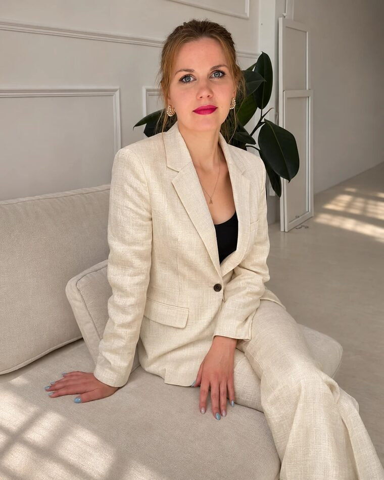
Zaokrąglenia i cienie
| Element | Zaokrąglenie | Cień |
|---|---|---|
| Przyciski, plakietki, pigułki | pełne (999 px) | brak |
| Duże karty i sekcje | 28–32 px (www), 28–40 px (grafiki 1080) | 0 14px 36px rgba(58,35,64,.06) |
| Karta wyróżniona, treść dokumentu | 28 px | 0 16px 44px rgba(58,35,64,.08) |
| Ramki informacyjne, spis treści | 18–24 px | brak |
| Portret w łuku | półkole + 24 px | 0 24px 50px rgba(58,35,64,.15) |
| Okładka produktu | 4% szerokości okładki | 0 16px 34px rgba(58,35,64,.2) |
Cienie zawsze miękkie i w odcieniu atramentu. Nigdy twarde czarne cienie, nigdy cień na tekście lub logo. Ostre rogi (0 px) nie występują w marce.
Przyciski i plakietki
- Główny: pigułka, DM Sans 700, wysokość ok. 54 px (padding 15 × 28 px). Kolor dostępny: koral ciemny z białym tekstem od 19 px albo koral z tekstem w atramencie. Hover: ciemniej o jeden odcień i uniesienie o 2 px.
- Drugorzędny: obrys 2,5 px koral, tekst koral ciemny. Na ciemnym tle przycisk biały z tekstem koral ciemny.
- Jeden główny przycisk w widoku. Tekst przycisku to czasownik: „Zacznij za darmo”, „Kup i pobierz”, „Zapisz się”.
- Plakietki: wersaliki 13 px (www) lub 24–26 px (social), odstęp +12%, tło żółte, brzoskwiniowe, liliowe jasne lub granatowe.
Ikony
Marka nie ma własnego zestawu ikon. Używamy Lucide (licencja ISC, darmowa): obrys 2 px przy 24 px, zaokrąglone końce, kolor atrament lub koral ciemny, bez wypełnień. W listach zalet znak ✓ w koralu, w linkach strzałka „→”. W grafikach nie używamy emoji.
Okładki PDF „Kierunek Zysk”
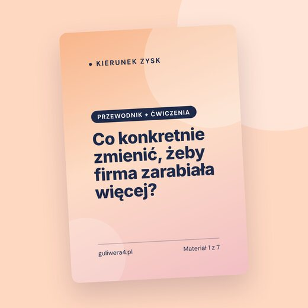
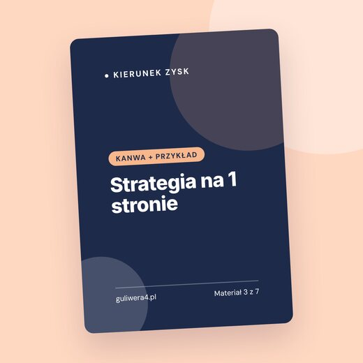
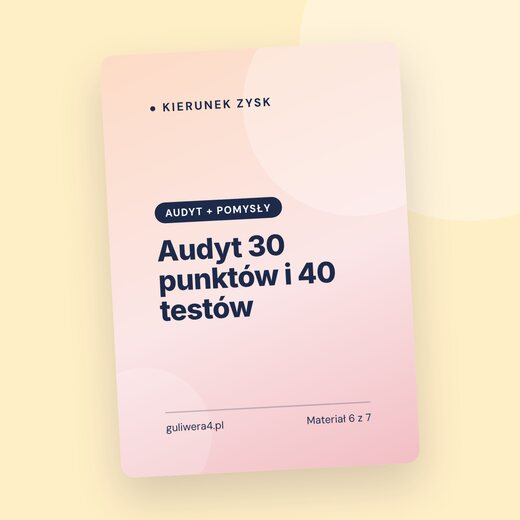
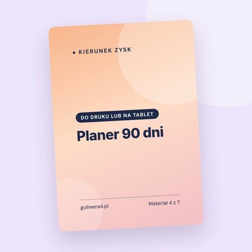
- Format: A4 pionowo, zaokrąglenie 4% szerokości. Szablon:
brand/szablony/okladka-pdf-a4.html; gotowe okładki:brand/okladki/. - Tło: gradient 160° #F8B68C → #FDDCC6 → #F2BFC5 (jasny) albo granat (wariant mocny). Dwa białe koła 28% i 18% krycia.
- Układ od góry: „● KIERUNEK ZYSK” (DM Sans 700, odstęp +14%) · pigułka z typem materiału · tytuł DM Sans 800, odstęp −2% · na dole linia, „guliwera4.pl” i „Materiał X z 7”.
- Kolor tekstu: granat na jasnym, biały na granacie; pigułka odwrotnie (granat/brzoskwinia).
- Wizualizacja do sklepu: kwadrat 1200 × 1200 w pastelu produktu, okładka obrócona o −3°, miękki cień.
- Linia Kierunek Zysk celowo ma tytuły bezszeryfowe: to „narzędzia”. Fraunces zostaje dla marki i treści.
Maskotka Lilek

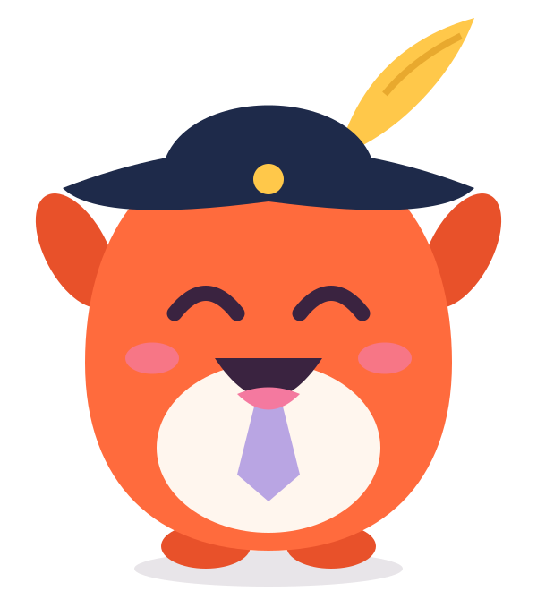
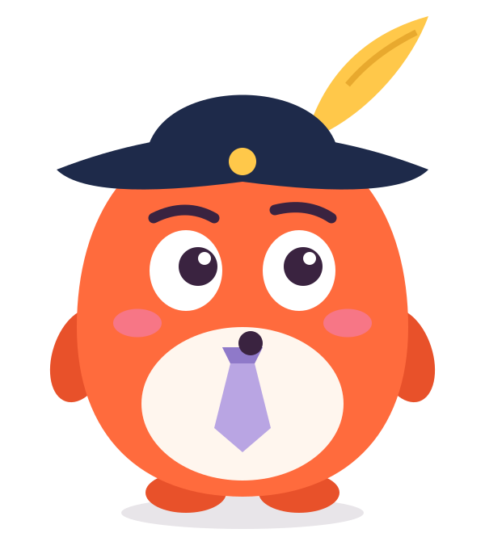
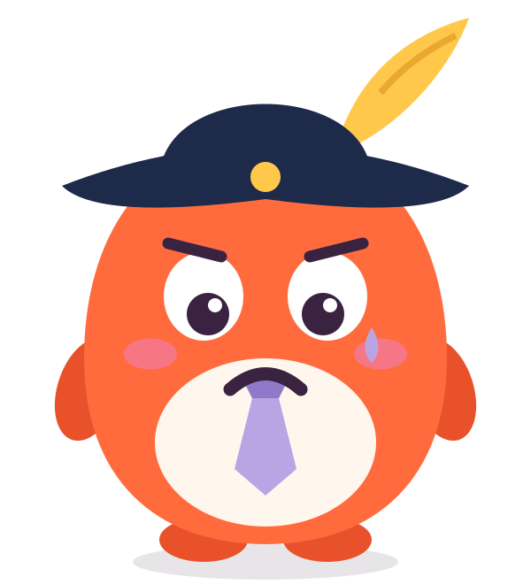
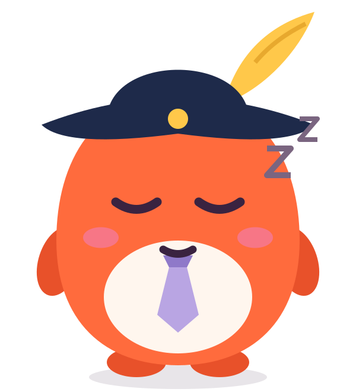
Kim jest
Mały Liliput w trójgraniastym kapeluszu z piórkiem i krawacie managera. Maskotka Akademii Guliwera: kibicuje, podpowiada, czasem się myli. Mówi krótko i z humorem („Bingo!”, „Prawie!”).
Zasady
- Tylko przy Akademii, nauce, aplikacji i darmowych treściach. Nie na okładkach płatnych PDF i nie w ofercie dla firm.
- Jeden Lilek na grafikę, min. 80 px wysokości, przy krawędzi, nie zasłania tekstu.
- Gotowe pliki z
brand/lilek/. Nie zmieniaj kolorów, proporcji ani stroju; nowe pozy tylko po akceptacji. - Dymek: biały, zaokrąglony 18 px, do 6 słów.
Fotografia
Jasno, naturalnie i ciepło. Zdjęcia mają wyglądać jak dobry dzień w jasnym biurze, nie jak sesja w studiu.
logo/angelika-portret-bialy.jpg (kopia w brand/zdjecia/), 1086 × 1358 px.Styl zdjęć
- Naturalne, miękkie światło dzienne, widoczne jasne plamy słońca.
- Jasne wnętrza: biel, beż, krem, drewno, rośliny. Spokojne tła bez napisów i cudzych logo.
- Ciepły balans bieli, lekko podniesione cienie, naturalne kolory skóry.
- Ludzie w prawdziwych sytuacjach małej firmy: kawiarnia, pracownia, notes, laptop, rozmowa zespołu.
- Zdjęcia stockowe: Unsplash lub Pexels (sprawdź licencję), tylko w tym samym klimacie.
Kadrowanie portretu
- Proporcja 4:5 w łuku portretu albo 9:16 w story. Oczy w górnej jednej trzeciej kadru.
- W CSS lub w programie: punkt ostrości na twarzy (
object-position: 50% 18%). - Nie ucinaj głowy ani dłoni w połowie palców. Zostaw powietrze nad głową w łuku.
Zdjęcia z sesji
Oficjalne zdjęcia do materiałów marketingowych: brand/zdjecia-sesja/ (opisy w README). Używaj tylko tych zdjęć i portretu głównego. Ubrania w odcieniach granatu, błękitu i kobaltu są dozwolone na zdjęciach, ale nie przenosimy tych kolorów do grafiki.
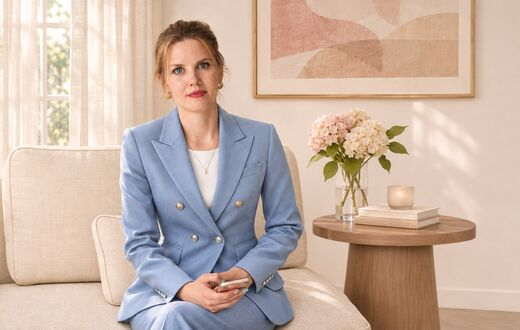
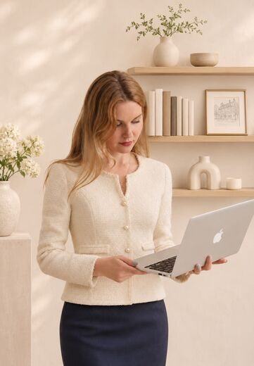
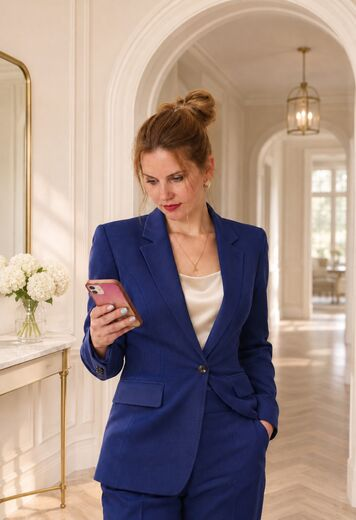
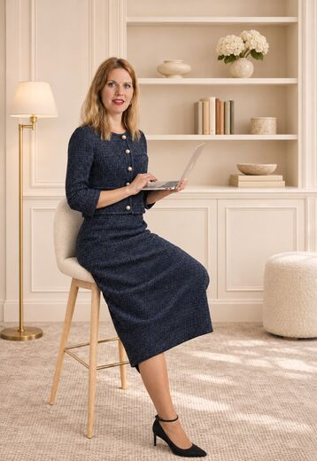
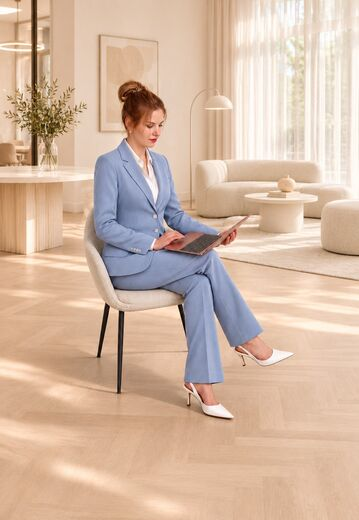
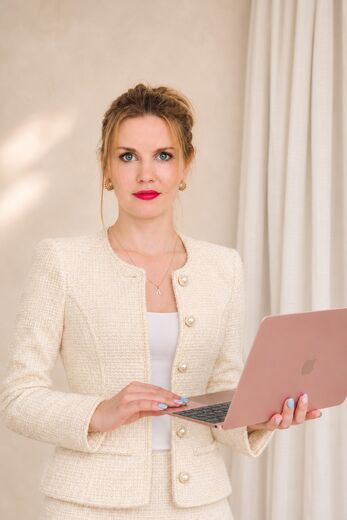
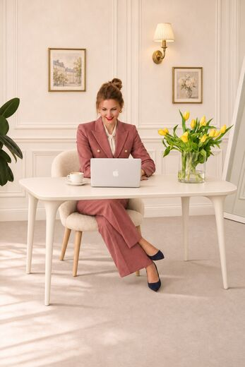
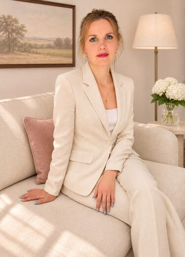
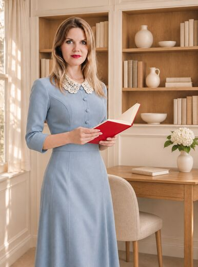
- Zdjęcie poziome (01, 02) w formatach poziomych. Nie wycinaj z niego pionowego kadru, bo zostaje za mało szczegółów.
- Zdjęcie na pełnym tle (story, post) tylko z tekstem na kremowej karcie albo panelu, nigdy bezpośrednio na zdjęciu.
- Jedno zdjęcie w obiegu najwyżej raz na tydzień w tym samym kanale, żeby profil nie wyglądał powtarzalnie.
Dozwolone i zakazane
Wolno
- Przycinać i prostować kadr.
- Lekko rozjaśnić, poprawić balans bieli w stronę ciepła.
- Delikatnie wyostrzyć.
- Usunąć drobne zabrudzenia tła (kurz, kabel).
Nie wolno
- Zmieniać rysów twarzy, wygładzać skóry, wyszczuplać, zmieniać koloru oczu i ust (wyraźna prośba Angeliki).
- Ciężkich filtrów, winiet, czerni i bieli, efektów „vintage”.
- Zmieniać koloru garnituru i tła, generować tła lub ubrań AI.
- Ciemnych, zimnych i niebieskich tonów, zdjęć „uścisk dłoni w garniturach”.
- Zdjęć z logo innych firm i wizerunkiem klientów bez zgody.
Inne zastosowania
Te same zasady w dokumentach, mailach, na stronie i w druku.
PDF i e-booki (wnętrze)
- A4, marginesy 18 mm, kolumna tekstu do 150 mm.
- Tło białe, nagłówki Fraunces 600 w atramencie, tekst DM Sans 10,5 pt.
- Ćwiczenia i ramki na pastelach (żółty jasny = ważne, liliowy jasny = ćwiczenie, róż jasny = uwaga), zaokrąglenie 4 mm.
- Stopka: „guliwera4.pl · nazwa materiału” po lewej, numer strony po prawej, 8 pt, atrament 60%.
- Ostatnia strona: logo poziome, kontakt, licencja „do użytku własnego”.
Prezentacje
- 16:9, 1920 × 1080, margines 120 px.
- Slajd tytułowy: krem, koło róż jasny, portret w łuku, logo poziome krótkie na dole.
- Slajd treści: biel, etykieta działu, nagłówek, maks. 40 słów albo 3 karty w pastelach.
- Tekst min. 28 px. Numer slajdu i znak G4 w stopce.
- Szablony:
prezentacja-1920x1080-*.html. W PowerPoint/Keynote odtwórz wymiary 1:1.
Newsletter i maile
- Szerokość 600 px, tło krem, treść na białej karcie (zaokrąglenie 24 px).
- Nagłówek: znak G4 48 px + „Guliwera 4”. Fonty z zamiennikami: Fraunces → Georgia, DM Sans → Arial.
- Przycisk-pigułka koral ciemny, biały tekst 17–18 px pogrubiony, zbudowany z tabeli (działa w Outlooku).
- Temat do 50 znaków, konkretny: „Oto Twój PDF · zamówienie nr 123”.
- Stopka 13 px atrament 60%: dane firmy, link do wypisu.
Strona www
- Kontener 1180 px, marginesy boczne 16–60 px, sekcje 56–100 px w pionie.
- Karty: biel lub pastel, zaokrąglenie 28 px, padding 24–34 px, miękki cień.
- Przyciski i plakietki: jak w sekcji 5. Linki: atrament z podkreśleniem w koralu lub koral ciemny pogrubiony.
- Menu: DM Sans 500 15,5 px, aktywna pozycja podkreślona różem 2,5 px.
- Tokeny kolorów:
brand/kolory/kolory.css(te same nazwy co na stronie).
Podpis e-mail
- Gotowy plik:
brand/szablony/email/podpis-email.html(otwórz, zaznacz, skopiuj do Gmaila lub Outlooka). - Znak G4 48 px, imię i nazwisko Georgia/Fraunces 16 px, hasło Caveat zastąpione kursywą, adres guliwera4.pl.
- Bez cytatów, banerów i obrazków poza znakiem.
Druk
- PDF/X-4 lub PDF/X-1a, CMYK, 300 dpi, fonty osadzone, spad 3 mm (wizytówka 85 × 55 mm + 2 mm wg drukarni).
- Papier niepowlekany biały lub kremowy, matowy. Bez folii błysk.
- Tekst poniżej 8 pt tylko w atramencie (nie w pastelach i koralu).
- Proof koloru dla koralu i pasteli przed nakładem.
- Logo do druku: wersje SVG/PDF wektorowe, nigdy PNG z sieci.
Tak / nie tak i checklista
Najczęstsze błędy w jednym miejscu. Przed oddaniem projektu przejdź przez checklistę.
Checklista przed oddaniem projektu
Zaznaczenia zostają tylko w Twojej przeglądarce.
Pliki do pobrania
Wszystko leży w folderze brand/ publicznego repozytorium marki: github.com/Angelika-pruchniak/guliwera4 → brand. Zacznij od pliku README.
Pytania i akceptacja
Wątpliwość, nowy format albo pomysł, którego nie ma w brandbooku? Napisz przed oddaniem projektu: kontakt@guliwera4.pl. Nowe elementy (ikony, pozy Lilka, kolory, układy) wchodzą do marki dopiero po akceptacji Angeliki i dopisaniu do brandbooka.
Social media
Gotowe szablony do edycji leżą w
brand/szablony/: otwierasz plik HTML w Chrome, klikasz tekst i piszesz. Klawisz G pokazuje siatkę i strefy, których nie zasłaniaj. Eksport do PNG w dokładnym rozmiarze robi skrypt (instrukcja w README).Wymiary, marginesy i ilość tekstu
Siatka i miejsce na logo
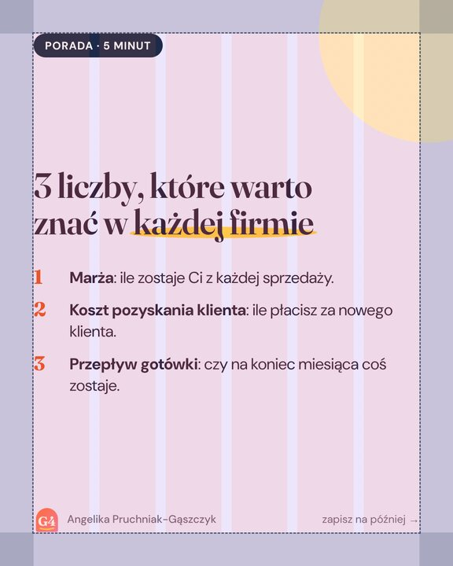
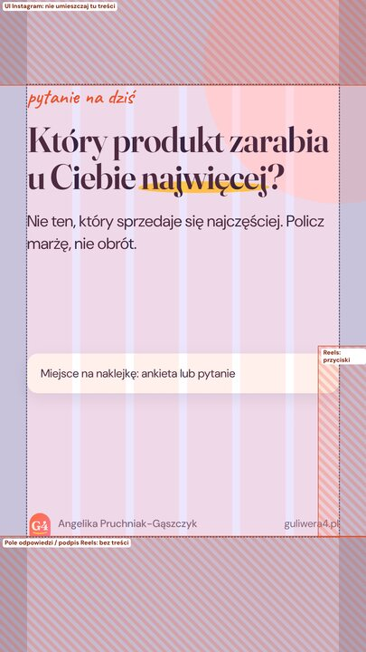
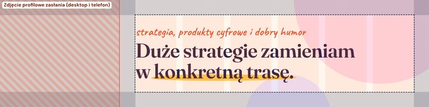
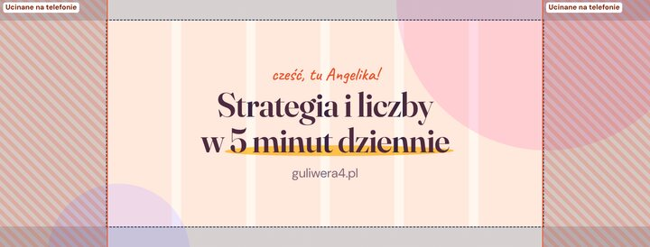
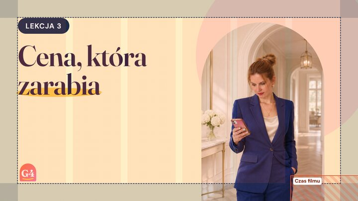
Układy
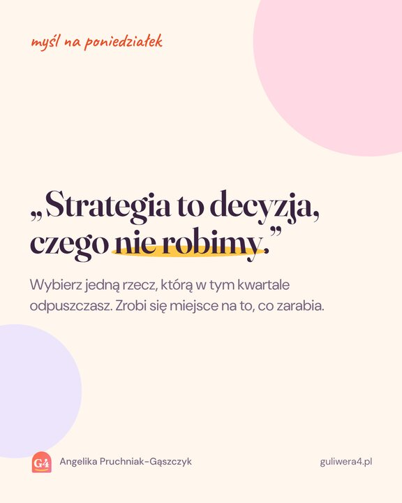
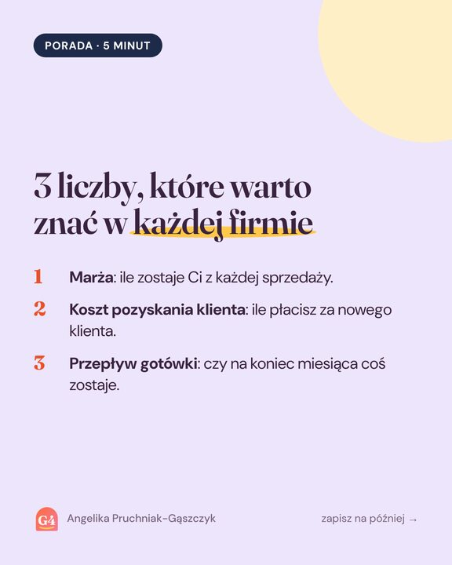
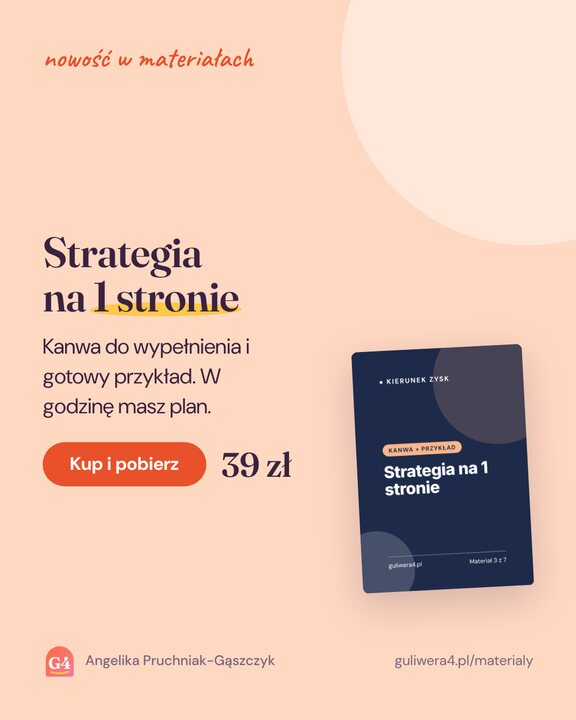
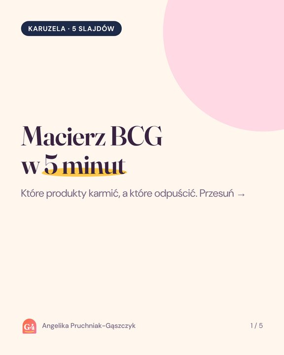
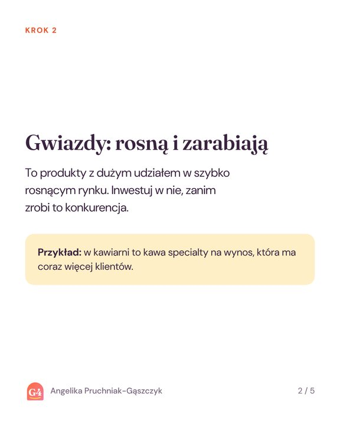
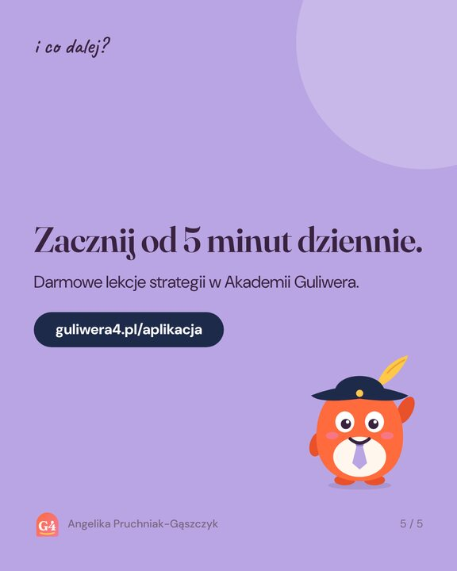
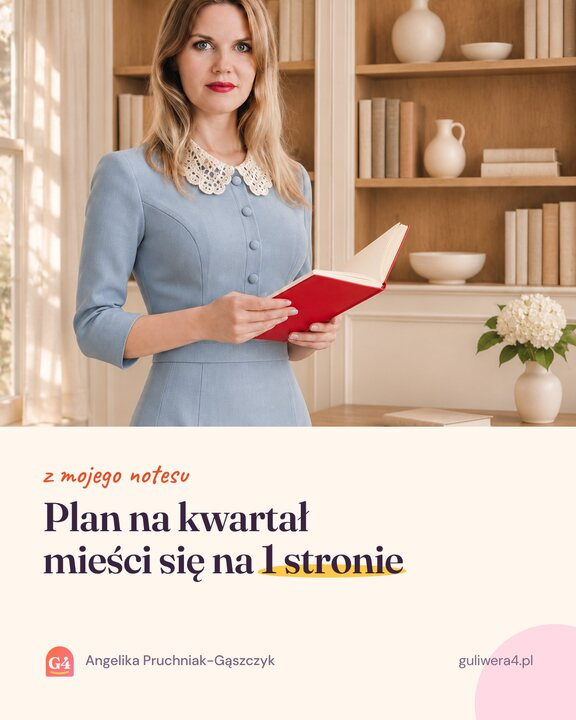
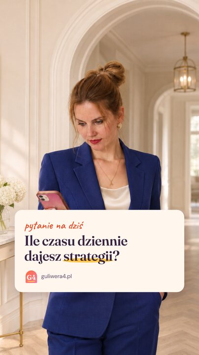
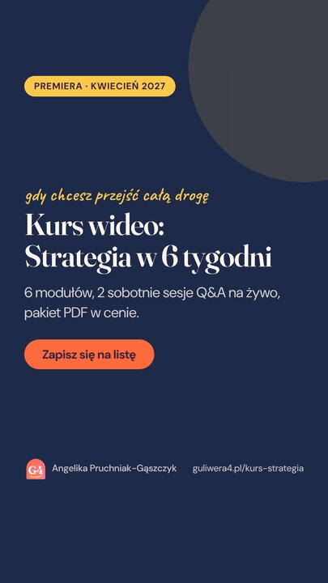
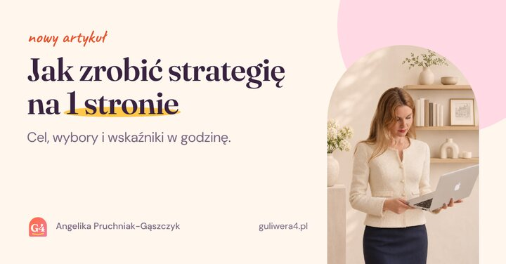
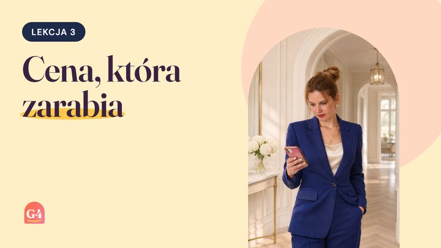
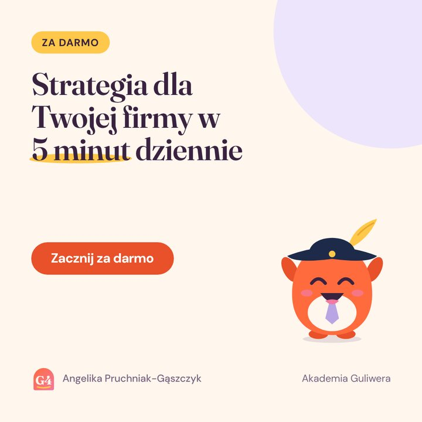
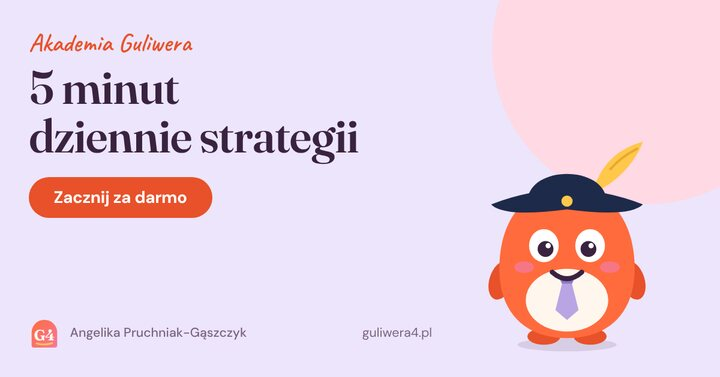